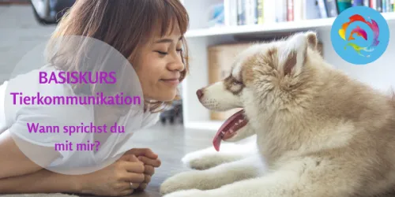

Bauch, Beine, Po-Programm für Freizeitpferde
Produktprofil · Marktplatz-Daten 2026-10-13 · Verkaufsseiten-Recherche 2026-10-13 · Kategorien: Animals & Pets
- Bauch, Beine, Po-Programm für Freizeitpferde ist ein/e Mitgliederbereich & Videokurs in Animals & Pets, vertrieben über den Digistore24-Marktplatz von Anbieter AnikasPferdeakademie, gelistet seit 2025-02-06.
- Listenpreis $1093.67; Digistore24 meldet — Checkout-Konversion, — Stornierungsquote und 30 % Affiliate-Provision.
- Verdienst pro Verkauf (Affiliate): $328.11 (Anbieter-seitige Statistik, keine Prognose).
Interesse an Bauch, Beine, Po-Programm für Freizeitpferde? Aktueller Preis, Boni und Garantiebedingungen finden Sie auf der offiziellen Seite des Anbieters:
Offizielle Verkaufsseite ansehen
Affiliate-Link (Werbung) — wir verdienen ggf. eine Provision, ohne Mehrkosten für Sie.

Marktplatz-Daten
| Produkttyp | Mitgliederbereich & Videokurs |
|---|---|
| Preis | $1093.67 (Single payment, Installment) |
| Affiliate-Provision | 30 % |
| Garantie/Rückgabe | Laut Verkaufsseite des Anbieters — vor dem Kauf auf der offiziellen Seite prüfen |
| Anbieter | AnikasPferdeakademie (gelistet seit 2025-02-06) |
| Marktplatz-Statistiken* | Checkout-Konversion — · Stornoquote — · Verdienst/Verkauf $328.11 |
* Anbieter-seitige Statistiken von Digistore24; sie hängen von der Traffic-Qualität ab und sind keine Prognose.
Marktplatz-Beschreibung des Anbieters
BAUCH, BEINE, PO – das Trainingsprogramm für dein Freizeitpferd In nur 8 Wochen Muskulatur, Balance & Tragkraft aufbauen, für ein gesundes, motiviertes Pferd und entspannte Ausritte. Die perfekte Vorbereitung für das Leben als Reitpferd. Mit dem richtigen Trainingsplan zu einem tragfähigen Pferd, ganz ohne Frust oder Rätselraten. Statt ständig zu grübeln, was dein Pferd wirklich braucht , bekommst du eine klare Schritt-für-Schritt-Anleitung, mit der du: dein Pferd in nur 2 Monaten kräftigst sein Gleichgewicht nachhaltig verbesserst und es optimal auf das Leben als Reitpferd vorbereitest
Von der Verkaufsseite des Anbieters
Hauptüberschrift
Vielleicht hast du das auch schon bemerkt:
Wie schön es ist, wenn...
Das bekommst du im Bauch, Beine, Po – Programm für Freizeitpferde
Abschnitts-Überschriften
- Mit dem richtigen Trainingsplan zu einem tragfähigen Pferd, ganz ohne Frust oder Rätselraten.
- Darf ich vorstellen?
- Das Bauch, Beine, Po – Programm für Freizeitpferde
- Das steckt zusätzlich im Kurs:
- Masterclass-Bonus: 👉 fetter Rabatt von 300 €
- Dein Investment für das Bauch, Beine, Po Programm
- nur 997 € 697 €
- Das Bauch, Beine, Po – Programm ist genau richtig für dich, wenn …
- Nicht geeignet ist das Programm, wenn …
Einstiegstext
Nach der Anmeldung bekommst du eine E-Mail. In dieser E-Mail musst du auf den Bestätigungs-Link klicken, um deine Registrierung abzuschließen.
In nur 8 Wochen Muskulatur, Balance & Tragkraft aufbauen, für ein gesundes, motiviertes Pferd und entspannte Ausritte.
Es fehlt ihnen an Muskulatur, Balance und Tragkraft und genau das kann langfristig zu gesundheitlichen Problemen führen.
Du bist unsicher, wie du richtig trainieren kannst, um Muskulatur nachhaltig aufzubauen
Fragen, die die Verkaufsseite beantwortet
- Ist dein Pferd wirklich bereit, dich gesund und entspannt zu tragen?
- Was passiert, wenn du mit dem BBP-Programm trainierst?
- Für wen ist dieser Kurs? Muss ich spezielle Voraussetzungen mitbringen? Pferdealter?
- Kann ich auch ganz ohne Pferd teilnehmen?
- Hast du noch Fragen?
Recherche-Methode: rohes HTML · 2826 Wörter · Qualität: rich · recherchiert am 2026-10-13. Vollständige Recherche-Datei (MD) ↗
Wie Produkte dieser Art geliefert werden
Allgemeiner Hinweis zu diesem Produkttyp (keine anbieterspezifische Anleitung): Videokurse laufen über einen Mitgliederbereich: nach dem Checkout erhalten Sie Zugangsdaten per E-Mail und können die Lektionen in Ihrem eigenen Tempo streamen. Für die genaue Anwendung von Bauch, Beine, Po-Programm für Freizeitpferde sind die offizielle Verkaufsseite und die enthaltenen Materialien maßgeblich.
Gut zu wissen
- Hoher Preis: $1093.67 ist eine erhebliche Ausgabe — prüfen Sie, ob es einen Zahlungsplan gibt, und vergleichen Sie zuerst die günstigeren Alternativen der Kategorie.
- Keine Garantie-Formulierung in unserer Recherche gefunden — bestätigen Sie das Rückgabefenster auf der offiziellen Seite, bevor Sie kaufen.
- Marktplatz-Zahlen (Preis, Provision, Konversion, Stornoquote) — Quelle: offizielle Digistore24-Marktplatz-API (Affiliate-Sicht), Stand 2026-10-13. Gegenprüfung: Marktplatz-Suche nach Produkt-ID 594594.
- Verkaufsseiten-Zitate — Quelle: https://aw.anikas-pferdeakademie.de/bbp, abgerufen 2026-10-13 (Methode: rohes HTML). Verify: offizielle Seite öffnen.
- Garantie / Rückgabe — vom Anbieter festgelegt; vor dem Kauf auf der Verkaufsseite bestätigen.
- Nicht von uns geprüft: Produktqualität, Ergebnisse, Testimonials — kein Praxistest für dieses Listing durchgeführt.
Häufige Fragen zu Bauch, Beine, Po-Programm für Freizeitpferde
Antworten aus dem Marktplatz-Snapshot (2026-10-13) und der Verkaufsseiten-Recherche (2026-10-13); Anbieteraussagen sind inline gekennzeichnet.
Was ist Bauch, Beine, Po-Programm für Freizeitpferde?
Bauch, Beine, Po-Programm für Freizeitpferde ist ein Angebot des Typs „Mitgliederbereich & Videokurs" im Digistore24-Marktplatz, Anbieter: AnikasPferdeakademie, gelistet seit 2025-02-06. Eingepflegt unter Tiere & Haustiere. Digistore24 wickelt Checkout, Lieferung und Rückgaben ab.
Wie viel kostet Bauch, Beine, Po-Programm für Freizeitpferde?
Der Digistore24-Marktplatz listet es für $1093.67 (single payment, installment). Preise legt der Anbieter fest und können sich ändern — der Marktplatz-Eintrag oben zeigt den Schnappschuss; die offizielle Verkaufsseite zeigt den aktuellen Preis.
Gibt es eine Geld-zurück-Garantie für Bauch, Beine, Po-Programm für Freizeitpferde?
Unsere Verkaufsseiten-Recherche hat keine explizite Garantie-Formulierung gefunden. Viele Digistore24-Produkte bieten 60 Tage Geld-zurück, aber das legt jeder Anbieter selbst fest — bestätigen Sie es auf der offiziellen Verkaufsseite, bevor Sie kaufen.
Ist Bauch, Beine, Po-Programm für Freizeitpferde seriös?
Wir bewerten keine Seriosität — wir veröffentlichen überprüfbare Zahlen: Anbieter AnikasPferdeakademie (gelistet seit 2025-02-06), Checkout-Konversion —, Stornoquote —, Affiliate-Verdienst/Verkauf $328.11 (alles Anbieter-seitige Marktplatz-Statistiken). Lesen Sie unsere 6-Punkte-Bewertungsmethode und entscheiden Sie anhand der Zahlen — oder diskutieren Sie Bauch, Beine, Po-Programm für Freizeitpferde auf GitHub.
Gibt es Alternativen zu Bauch, Beine, Po-Programm für Freizeitpferde?
Ja — die nächstähnlichen Angebote derselben Kategorie sind Zertifizierter Katzenverhaltensberater / Katzencoach, Du und Dein Herdenschutzhund - glücklich verbunden, Tierschutz-Guide – inkl. Premium Plus Paket. Details in der Vergleichstabelle oben bzw. auf der Alternativen-Seite mit allen Marktplatz-Zahlen.
Wo kann ich Bauch, Beine, Po-Programm für Freizeitpferde sicher kaufen?
Nur über die offizielle Verkaufsseite, die auf dieser Seite verlinkt ist (Checkout und Rückgaben laufen über Digistore24). Prüfen Sie dort Preis und Garantie vor der Bestellung. Der Link ist ein Affiliate-Link — der Kauf unterstützt diese Website ohne Mehrkosten für Sie.
Wie erhalte ich Bauch, Beine, Po-Programm für Freizeitpferde nach der Zahlung?
Der Checkout läuft über Digistore24: Nach der Zahlung erhalten Sie Ihren Zugang oder Download per E-Mail und in Ihrem Digistore24-Kundenkonto. Lieferdetails für diesen Produkttyp: Videokurse laufen über einen Mitgliederbereich: nach dem Checkout erhalten Sie Zugangsdaten per E-Mail und können die Lektionen in Ihrem eigenen Tempo streamen. Bei Problemen kann der Digistore24-Käufersupport Ihre Bestellung wiederherstellen.
Alle 50 Käuferfragen zu Tiere & Haustiere — das komplette Kategorie-FAQ.
Bauch, Beine, Po-Programm für Freizeitpferde auf Reddit diskutieren
In Community-Threads vergleichen echte Käufer Erfahrungen. Wir verlinken Communities, keine einzelnen Posts — Threads verschwinden, Subreddits bleiben:
- Reddit-Suche nach „Bauch, Beine, Po-Programm für Freizeitpferde" — Live-Ergebnisse, von uns nicht beeinflusst.
- Top-„Erfahrungs"-Treffer dieses Jahr — selbst nach Aktualität filtern.
Passendes auf Amazon.de
Physische Produkte und Zubehör, die häufig zusammen mit Bauch, Beine, Po-Programm für Freizeitpferde gekauft werden:
- Haustierbedarf auf Amazon.de — Top-Ergebnisse, Amazon-Ranking.
- Bestseller: Haustierbedarf — live Liste von Amazon, von uns nicht kuratiert.
Werbung: Als Amazon-Partner verdient DigistorePicks DE an qualifizierten Käufen (Partner-tag adminstorede-21). Amazon setzt eigene Preise und Provisionen (niedrige einstellige Prozente — weit unter den 30–75% der Digistore24-Anbieter). Amazon ist ein Convenience-Angebot für Sachprodukte, kein Ersatz für das digitale Produkt oben.
Ähnliche Angebote in Tiere & Haustiere

Zertifizierter Katzenverhaltensberater / Katzencoach – Fernlehrgang der aCATemy® Bewirb eine professionelle Online-Ausbildung für alle, die Katzenverhalten fund

Diese Schulung ist hilft Haltern von Herdenschutzhunde in Familienhand, ein glückliches und harmonischen Zusammenleben zu ermöglichen. Empfehlen Sie das einziga

So wird aus Lesen echte Hilfe vor Ort! Im Guide erfahren Sie: Warum Tierschutz heute wichtiger ist den je Was wirklich im Tierschutzalltag so passiert Die 5 grö

Schritt für Schritt die nonverbale Kommunikation mit Tieren erlernen. Online Kurs - Tierakademie Es sind KEINE Vorkenntnisse notwendig. Du kannst JEDERZEIT eins
Optionen vergleichen? Bauch, Beine, Po-Programm für Freizeitpferde im Vergleich mit den nächsten Alternativen — Marktplatz-Zahlen direkt nebeneinander.
Wie schneidet Bauch, Beine, Po-Programm für Freizeitpferde ab? (Marktplatz-Zahlen)
| Produkt | Typ | Preis | Provision | Checkout-CR* | Storno* | Verdienst/Verkauf |
|---|---|---|---|---|---|---|
| Bauch, Beine, Po-Programm für Freizeitpferde | Mitgliederbereich & Videokurs | $1093.67 | 30 % | — | — | $328.11 |
| Zertifizierter Katzenverhaltensberater / Katzencoach | Mitgliederbereich & Videokurs | $1315.41 | 20 % | — | — | $263.08 |
| Du und Dein Herdenschutzhund - glücklich verbunden | Webinar | $541.19 | 30 % | — | — | $162.36 |
| Tierschutz-Guide – inkl. Premium Plus Paket | Download | $473.55 | 25 % | — | — | $118.38 |
| Tiere besser verstehen durch Tierkommunikation Basis Kurs | Mitgliederbereich & Videokurs | $441.65 | 25 % | — | — | $110.41 |
Entscheidungsfaktoren für Käufer
- Funktion: Checkout-Konversion und Anbieter-Bilanz vergleichen — beide in der Tabelle oben.
- Passung: Typ und Voraussetzungen (Lieferformat, Vorkenntnisse) in jedem Profil prüfen.
- Wartung: Die Stornoquote ist das Kaufreue-Signal; Nutzungsbedingungen stehen auf den offiziellen Seiten.
- After-Sales: Garantie-Formulierung und Support — vor dem Kauf auf offiziellen Seiten verifizieren.
* Anbieter-seitige Statistiken; abhängig von der Traffic-Qualität, keine Prognose. Vollständiger Kontext: Alternativen-Seite zu Bauch, Beine, Po-Programm für Freizeitpferde.
Ähnliche Suchanfragen
Wo Sie es sich ansehen können
Wo Sie es sich ansehen können
Aktuelle Preise, Garantie und Boni finden Sie auf der offiziellen Verkaufsseite:
Offizielle Verkaufsseite ansehen
Das ist ein Affiliate-Link (Werbung) — kaufen Sie darüber, verdienen wir ggf. eine Provision, ohne Mehrkosten für Sie.
Quellen & weiterführende Informationen
- Offizielle Verkaufsseite (aktueller Preis, Garantie, Boni): aw.anikas-pferdeakademie.de/bbp (Affiliate-Link)
- Öffentliche Digistore24-Produktseite: digistore24.com/product/594594
- Vollständige Recherche-Datei (Markdown, versioniert): content/products/54802-bauch-beine-po-programm-f-r-freizeitpferde.md
- Marktplatz-Kategorie: Tiere & Haustiere
Wie wir Produkte wie Bauch, Beine, Po-Programm für Freizeitpferde bewerten
Sechs Prüfungen, ausschließlich mit offiziellen Marktplatz-Zahlen. Die vollständige Bewertungsmethode lesen · unsere Recherche-Standards & Kennzeichnung.
Fragen oder eigene Erfahrungen mit Bauch, Beine, Po-Programm für Freizeitpferde?
Praxis-Tests veröffentlichen wir erst, nachdem wir ein Produkt selbst gekauft haben — aber Ihre Erfahrung hilft anderen Lesern: Diskussion zu Bauch, Beine, Po-Programm für Freizeitpferde auf GitHub starten/verfolgen. Falsche Zahl gefunden? Korrektur melden — jede Seite zeigt ihre Datenstände, Korrekturen gelten für die ganze Website.